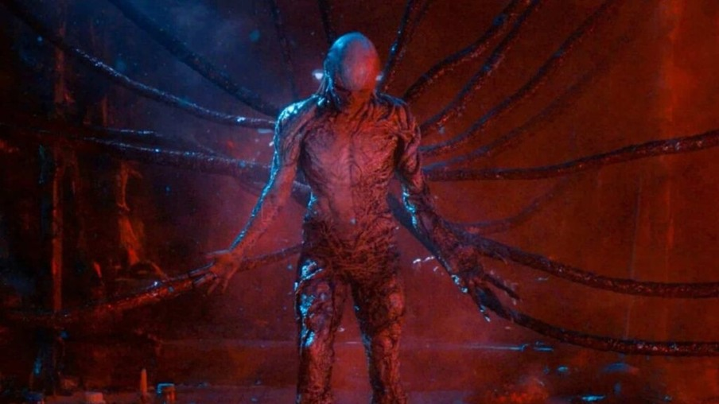
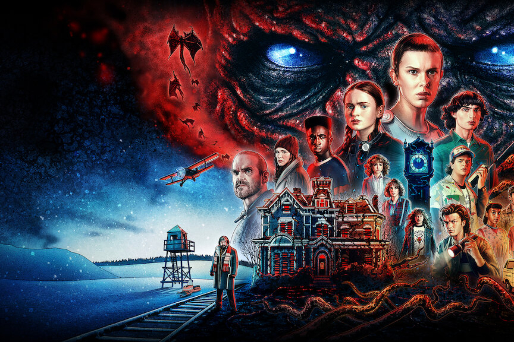
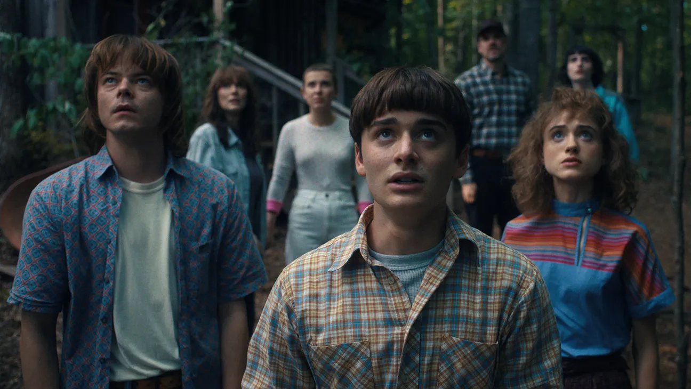

O Mundo Invertido
O Mundo Invertido é uma dimensão paralela que existe ao mesmo tempo que o nosso mundo. Ele é habitado por criaturas estranhas e perigosas, como Demogorgons, Mind Flayers e Vecna. A atmosfera é sombria e ameaçadora, com uma vegetação densa e um céu avermelhado. A luz é escassa, e a sensação de estar sendo observado é constante.

Stranger Things Vol.1
O fim está mais próximo do que nunca. Na quinta e última temporada de Stranger Things, Hawkins se torna o campo de batalha final contra o Mundo Invertido. Laços serão testados, segredos virão à tona e só a união poderá salvar o que resta. Prepare-se para o confronto definitivo. Confira o trailer oficial da quinta temporada de Stranger Things, que promete trazer uma conclusão épica para a série. A batalha final está prestes a começar, e o destino de Hawkins e do Mundo Invertido está em jogo.
Stranger Things quebra novo recordo com anúncio
- 
- 
- 
O Clube Dungeons & Dragons
Para os fãs de Stranger Things, o Clube Dungeons & Dragons é um espaço onde a imaginação ganha vida. Aqui, você pode se juntar a outros aventureiros para explorar mundos fantásticos, enfrentar monstros e desvendar mistérios. Se você é novo no jogo ou um veterano, todos são bem-vindos para compartilhar histórias e criar novas aventuras.